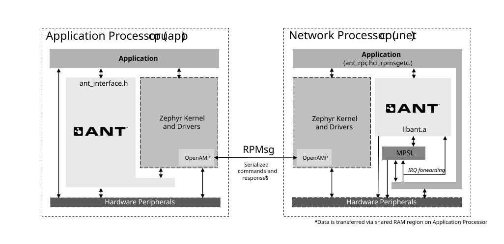

Integration notes
This page describes how to integrate the ANT library into an nRF Connect SDK application.
Configuration
In nRF Connect SDK applications, you can enable ANT Wireless using the CONFIG_ANT=y Kconfig option.
On dual-core platforms (nRF5340), ANT configurations should be supplied to both the application and network core processors. To include ANT multicore API serialization, use CONFIG_ANT_NP=y Kconfig option. This will include the interproccessor communication layers with the default underlying transport (nRF RPC).
Architecture
The following image shows how ANT is enabled on dual core processors (nRF5340).

Single Protocol
By default, the provided ANT samples target the nrf5340dk_nrf5340_cpuapp core and automatically include a single protocol network core image (ant_rpc).
The automatic child image feature relies on a further two configuration options:
CONFIG_ANT_INCLUDE_NP_CHILD_IMAGE=yCONFIG_BOARD_ENABLE_CPUNET=yto enable cpunet from cpuapp
Dual Protocol: ANT and BLE
Multiprotocol support can be evaluated by enabling both CONFIG_BT and CONFIG_ANT along with any other desired stack configuration settings.
Instead of including the single protocol network core image (ant_rpc), the ANT protocol stack will be combined with the default nRF Connect SDK BLE stack (typically hci_rpmsg).
Due to space constraints on the network core, it may be necessary to limit protocol resources to those strictly required for your application (ie. using CONFIG_BT_MAX_CONN).
See the samples/multiprotocol folder for dual protocol application examples.
License Keys
You MUST obtain a valid commercial license key BEFORE releasing a product to market that uses ANT.
You may use the Evaluation license key for non-commerical use by setting CONFIG ANT_EVALUATION_KEY=y or defining CONFIG_ANT_LICENSE_KEY in the Kconfig configuration file for the network core image (cpunet). If using the automatic child image, this will be either child_image/ant_rpc.conf or child_image/hci_rpmsg.conf.
If your organization already has a unique commercial license key, you can continue to use the same license key for all products based on Nordic Semiconductor’s nRF52 and nRF53 SoCs. Use CONFIG_ANT_LICENSE_KEY="your-key" to define your unique key as described above.
For more information about ANT licensing visit the following website: https://www.thisisant.com/developer/ant/licensing